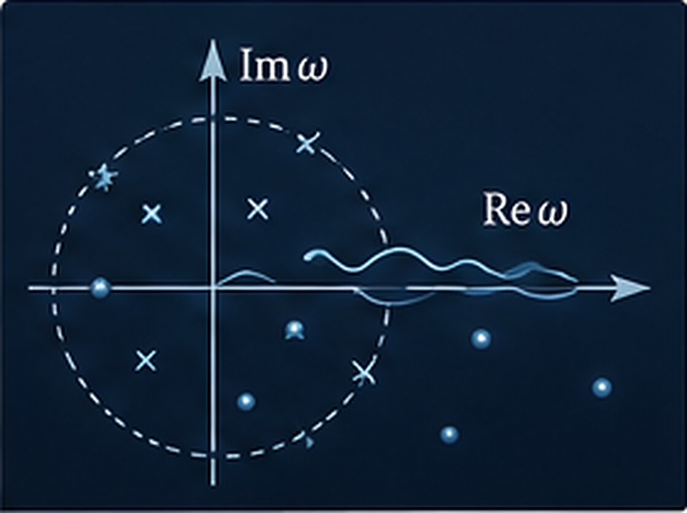

Active
Analytic structure and the limits of hydrodynamics
We study where hydrodynamic expansions stop being analytic and what that breakdown reveals about microscopic dynamics. The programme compares static screening scales with dynamical pole collisions, follows quasinormal modes through complex momentum, and studies how isolated poles reorganise into branch cuts.
Project page →